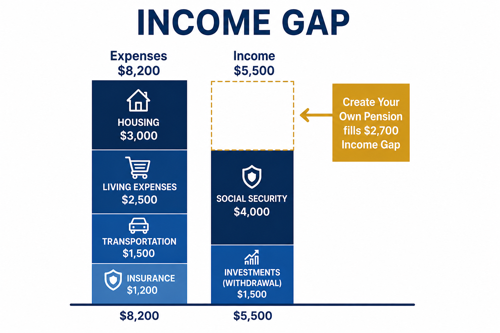

Create a Retirement Paycheck You Can't Outlive
Find your monthly income gap and explore insurance-based strategies designed to cover essential expenses, so the rest of your portfolio can stay invested for growth, flexibility, and legacy.
Free. No contact information required. Takes less than five minutes.
Hope Is Not a Retirement Plan
You've spent decades saving. But a retirement account is not the same as a retirement paycheck.
These bills do not pause when the market dips. You need a plan for turning savings into guaranteed income.
The Retirement Question Nobody Is Asking You
How much of your monthly retirement income is guaranteed for life?
An investment plan and a retirement income plan are not the same thing. Investments can grow your money, but retirement income has to arrive every month, whether the market is rising, falling, or taking years to recover.
For most of your working life, your paycheck arrived on schedule. Retirement should not mean trading that for a series of uncertain withdrawals.
-
Your financial advisor may not be your income specialist
Growing money and turning it into income that lasts for life are two different skill sets.
-
Social Security was not designed to carry the full load
It's an important foundation, but for most people it only covers part of the bill.
-
The market should not decide when you can retire
A downturn near retirement can force you to delay, spend less, or take on more risk than you planned.
The good news is you can find this number before retirement begins: your retirement income gap.
I Lost 25% of My Retirement Savings. Twice.
That is why I believe a portfolio alone is not an income plan.
After 30 years in financial services, including two market crashes that each cost me a quarter of my savings, I stopped asking how much I could make and started asking how much income I could guarantee.
You do not have to learn that lesson the hard way. You can find out exactly where you stand. You can cover your essentials with income that doesn't depend on the market. You can stop wondering and start knowing.
That is the plan I help Texans build every day.

What an Income Plan Actually Looks Like
An income plan starts with one question: what will it cost you to live your life in retirement, every month?

Illustrative example only. Your numbers will vary.
The difference between what you need and what you have guaranteed is your income gap. That gap is what we are solving for.
Here is where most people stop.
They assume the gap has to come from their portfolio. It doesn't have to.
A portion of your retirement savings can be converted into a Pension Strategy, a guaranteed monthly income stream that covers your essential expenses for life, regardless of how long you live or what the market does. Not all of your savings. Just enough to close the gap.
With a Pension Strategy, You Are in Control
-
You lock in the amount
Cannot be reduced by Congress
-
You decide when income starts
Cannot be delayed by a change in retirement age
-
Not subject to political decisions you have no control over
Social Security is your baseline income. Your Pension Strategy builds on top of it. Together they create an income foundation that no market downturn, no political decision, and no change in retirement rules can take away.
What that does to the rest of your portfolio is remarkable. It no longer has to carry the full burden of your lifestyle. It can stay invested. It can recover from downturns. It can grow and be used for the things that make retirement genuinely enjoyable.
Travel. Family. Home. The causes you care about.
Three Steps to Your Own Pension
Simple, transparent, and always at your pace.
1. Get My Gap
Find the difference between what you need every month and what you have guaranteed.
2. Create Your Own Pension
We design a guaranteed income stream to cover your essential expenses.
3. Enjoy Your Retirement
The market can do what it does, your lifestyle will not be affected.
Do You Know Your Income Gap?
Most people never calculate it.
Without that number, you are guessing, and guessing usually leads to one of two outcomes:
- Working longer than you planned
- Spending less than you hoped, right when you finally have time to enjoy it
No personal information required.
No obligation.
Just your number.
Free. Anonymous. Takes Less Than 5 Minutes.
Calculator results are illustrative only and will vary based on user inputs. For informational purposes only.
Meet twins Hope and Helen
Same $40,000 a year. Very different retirement outcomes.
Hope and Helen both retire at 65. Both take $40,000 a year in retirement income for the next 25 years. Both experience the same market returns over the same 25 years.
The only difference is where their income comes from.
Hope retires with a $1,000,000 portfolio and withdraws $40,000 a year directly from it. A reasonable plan, and one most retirees follow.
Helen retires with a $500,000 portfolio, but she'd set up a Pension Strategy years earlier to pay her $40,000 a year, guaranteed, for the rest of her life. Her portfolio never needs to fund a single dollar of her income.
By age 90, after both sisters have taken $1,000,000 in income over 25 years, the results look nothing alike.
Hope's Portfolio at 90
$1,394,720
Helen's Portfolio at 90
$3,193,273
Helen's Advantage
$1,798,553
in excess portfolio growth, taking the same total income in the same market, with half the starting balance
The difference isn't luck. It's a Pension Strategy.
Ready to Find Your Income Gap?
Schedule a free Retirement Income Analysis. No pressure, no obligation, and no sales pitch. Just a straightforward conversation about your retirement income picture.
The call works best when you come with a general sense of your monthly essential expenses and your guaranteed income sources like Social Security or any pension. If you have already used the Income Gap Calculator you are already prepared.
Prefer to reach out directly? Email admin@createyourownpension.org
Licensed Texas Life and Health Insurance Professional | TDI License #2266812 | 30 Plus Years Financial Services Experience | Independent, I Work For You
A guaranteed income strategy may not be suitable for everyone. Products and availability vary by state. Licensed in Texas. The information on this website is for educational and informational purposes only and does not constitute financial, investment, tax, or legal advice.